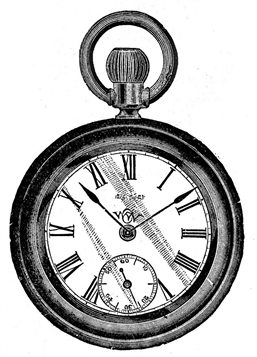

PROCRASTINER
"C'est le travail qu'on ne commence pas qui met le plus de temps à être achevé."
J.R.R. TOLKIEN
J.R.R. TOLKIEN
La procrastination peut se définir comme le fait de différer, de repousser des actions particulières, en trouvant mieux à faire que les tâches urgentes ou les activités pour lesquelles on s'était engagé. Tout le monde procrastine plus ou moins, mais parfois cela peut devenir un véritable handicap dans la vie du quotidien.
Être un "retardataire chronique" ne signifie pas ne rien faire. Au contraire, le sujet peut être pris d’une véritable frénésie d’activités tant que celles-ci ne possèdent aucun rapport avec la tâche problématique. Le procrastineur se disperse en attendant le point de non retour, le dernier ultimatum pour entrer en action et ceci afin de ne pas avoir le choix. Derrière cet évitement se trouve généralement de l'anxiété, un manque de confiance, une difficulté à l'engagement ou au changement. Mais cela peut être également un conflit inconscient.
Par ailleurs, dans le cerveau des procrastinateurs, une zone particulière est faiblarde : le cortex préfrontal antérieur qui est cette zone qui bloque l'activité des zones de vagabondage et qui permet de rester focalisé. Comme on le voit chez les personnes qui se mettent au travail à l'avance pour ne pas être prises de court au moment de l'examen, ou de l'échéance fiscale. Le problème, c'est que lorsque l'esprit se détache du but fixé et commence à vagabonder, il est vulnérable aux influences d'une zone cérébrale appelée amygdale, laquelle se montre très sensible à tout ce qui est inconfortable ou déplaisant. Ce circuit ne se projette pas dans le temps, il cherche à minimiser son désagrément et son inconfort par des mesures immédiates et instantanées. Le procrastinateur est alors pris dans l'instant, littéralement enfermé par son amygdale et il fait alors tout ce qu'il peut pour aller mieux maintenant. Le désagrément se trouve déplacé dans le futur, perçu comme inoffensif, car inaccessible à l'amygdale.
Si on a longtemps associé la procrastination à un problème de gestion du temps. Les dernières recherches semblent nous dire que ce serait plutôt un problème d’ordre émotionnel. Les procrastinateurs savent ce qu’ils doivent faire, ils ne peuvent cependant pas se mettre en route. C’est une déficience entre l’intention et l’action. L’humeur et le ressenti émotionnel seraient à la base de cette déficience. Les procrastinateurs, bien que conscients de leurs devoirs, préfèrent préserver une humeur libre de tous souci. Ainsi ce n’est pas tant la tâche qu’ils redoutent que le changement d’humeur qu’elle impose. La question "comment se sentir bien maintenant" semble prendre l’avantage sur la question "comment résoudre ce problème" dans le cerveau des procrastinateurs chroniques.
Cette négociation avec leurs obligations semble toutefois s’accompagner d’un sentiment de culpabilité dans la grande majorité des cas. L’être humain recherche en général le chemin de moindre pénibilité. La procrastination soutient cet objectif sur le court terme. Elle est donc un comportement normal et à fonction de stratégie d'adaptation. Les procrastinateurs voient (à un niveau inconscient) toute tâche/travail comme une intrusion extérieure sur leur état émotionnel, ce qu’ils repoussent vivement. Il y aurait chez les procrastinateurs une difficulté à faire primer le rationnel (on sait ce que l’on doit faire) sur l’émotionnel (pas envie d’affecter son humeur).
Être un "retardataire chronique" ne signifie pas ne rien faire. Au contraire, le sujet peut être pris d’une véritable frénésie d’activités tant que celles-ci ne possèdent aucun rapport avec la tâche problématique. Le procrastineur se disperse en attendant le point de non retour, le dernier ultimatum pour entrer en action et ceci afin de ne pas avoir le choix. Derrière cet évitement se trouve généralement de l'anxiété, un manque de confiance, une difficulté à l'engagement ou au changement. Mais cela peut être également un conflit inconscient.
Par ailleurs, dans le cerveau des procrastinateurs, une zone particulière est faiblarde : le cortex préfrontal antérieur qui est cette zone qui bloque l'activité des zones de vagabondage et qui permet de rester focalisé. Comme on le voit chez les personnes qui se mettent au travail à l'avance pour ne pas être prises de court au moment de l'examen, ou de l'échéance fiscale. Le problème, c'est que lorsque l'esprit se détache du but fixé et commence à vagabonder, il est vulnérable aux influences d'une zone cérébrale appelée amygdale, laquelle se montre très sensible à tout ce qui est inconfortable ou déplaisant. Ce circuit ne se projette pas dans le temps, il cherche à minimiser son désagrément et son inconfort par des mesures immédiates et instantanées. Le procrastinateur est alors pris dans l'instant, littéralement enfermé par son amygdale et il fait alors tout ce qu'il peut pour aller mieux maintenant. Le désagrément se trouve déplacé dans le futur, perçu comme inoffensif, car inaccessible à l'amygdale.
Si on a longtemps associé la procrastination à un problème de gestion du temps. Les dernières recherches semblent nous dire que ce serait plutôt un problème d’ordre émotionnel. Les procrastinateurs savent ce qu’ils doivent faire, ils ne peuvent cependant pas se mettre en route. C’est une déficience entre l’intention et l’action. L’humeur et le ressenti émotionnel seraient à la base de cette déficience. Les procrastinateurs, bien que conscients de leurs devoirs, préfèrent préserver une humeur libre de tous souci. Ainsi ce n’est pas tant la tâche qu’ils redoutent que le changement d’humeur qu’elle impose. La question "comment se sentir bien maintenant" semble prendre l’avantage sur la question "comment résoudre ce problème" dans le cerveau des procrastinateurs chroniques.
Cette négociation avec leurs obligations semble toutefois s’accompagner d’un sentiment de culpabilité dans la grande majorité des cas. L’être humain recherche en général le chemin de moindre pénibilité. La procrastination soutient cet objectif sur le court terme. Elle est donc un comportement normal et à fonction de stratégie d'adaptation. Les procrastinateurs voient (à un niveau inconscient) toute tâche/travail comme une intrusion extérieure sur leur état émotionnel, ce qu’ils repoussent vivement. Il y aurait chez les procrastinateurs une difficulté à faire primer le rationnel (on sait ce que l’on doit faire) sur l’émotionnel (pas envie d’affecter son humeur).

La procrastination peut également être le signe visible du syndrôme de l'imposteur. Les personnes atteintes de ce syndrome expriment une forme de doute maladif qui consiste essentiellement à nier la propriété de tout accomplissement personnel. Ces personnes rejettent donc plus ou moins systématiquement le mérite lié à leur travail et attribuent le succès de leurs entreprises à des éléments qui leur sont extérieurs (la chance, leurs relations, des circonstances particulières). Dans certains cas la personne atteinte peut aller jusqu'à se percevoir souvent comme une sorte de dupeur-né qui abuse ses collègues, ses amis, ses supérieurs et s'attendre à être démasquée d'un jour à l'autre.
Inconsciement, il s'agirait en l'occurrence d'un fantasme masochiste sapant les mécanismes narcissiques et polluant l'existence du sujet affecté. Ces personnes douteraient, à un moment ou à un autre de leur carrière, de la réalité ou de la légitimité de leurs succès. Ces pensées négatives sont généralement dépassées par une certaine clairvoyance, mais elles peuvent finir par devenir invalidantes. Certains de ces sujets souffrant de ce syndrome sont motivés par l'idée que leurs travaux sont trop simples et évidents pour mériter de l'attention, de l'admiration, un salaire ou des récompenses et/ou reconnaissances.
Pour d'autres, le complexe de l'imposteur est lié à la peur de réussir et les empêche de développer pleinement leur potentiel. Elles vivent dans le doute et pensent qu'un jour elles seront démasquées et que quelqu'un fera la preuve de leur incapacité, alors reportent toutes échéances.
Cette stratégie de "sensation d'escroquerie" prépare la personne à l'échec, pour lequel elle a une explication toute faite, et lui permet d'attribuer à la chance ou à un contexte particulier les raisons de la réussite éventuelle. Ainsi, la procrastination peut être utilisée comme mécanisme d'adaptation au sentiment d'insuffisance de la personne. Le syndrome de l’imposteur n’est pas considéré comme une pathologie mais plutôt comme une manifestation normale, un mécanisme psychologique qui peut s’exprimer au moins une fois dans la vie. Cependant, un lien entre le syndrome de l’imposteur, l’anxiété sociale et la dépression peut exister et être démontré empiriquement.
Le travail par l'hypnose permet de reconsidérer ses capacités à gérer ses priorités, de jauger ses valeurs, se reconnecter avec une meilleur estime de soi ou encore reconsidérer la notion du temps. Parallèlement à cela, un travail sur la détente, l'anxiété ou le stress peut être gage de réussite dans le changement.
Et si demain c'était maintenant !
Inconsciement, il s'agirait en l'occurrence d'un fantasme masochiste sapant les mécanismes narcissiques et polluant l'existence du sujet affecté. Ces personnes douteraient, à un moment ou à un autre de leur carrière, de la réalité ou de la légitimité de leurs succès. Ces pensées négatives sont généralement dépassées par une certaine clairvoyance, mais elles peuvent finir par devenir invalidantes. Certains de ces sujets souffrant de ce syndrome sont motivés par l'idée que leurs travaux sont trop simples et évidents pour mériter de l'attention, de l'admiration, un salaire ou des récompenses et/ou reconnaissances.
Pour d'autres, le complexe de l'imposteur est lié à la peur de réussir et les empêche de développer pleinement leur potentiel. Elles vivent dans le doute et pensent qu'un jour elles seront démasquées et que quelqu'un fera la preuve de leur incapacité, alors reportent toutes échéances.
Cette stratégie de "sensation d'escroquerie" prépare la personne à l'échec, pour lequel elle a une explication toute faite, et lui permet d'attribuer à la chance ou à un contexte particulier les raisons de la réussite éventuelle. Ainsi, la procrastination peut être utilisée comme mécanisme d'adaptation au sentiment d'insuffisance de la personne. Le syndrome de l’imposteur n’est pas considéré comme une pathologie mais plutôt comme une manifestation normale, un mécanisme psychologique qui peut s’exprimer au moins une fois dans la vie. Cependant, un lien entre le syndrome de l’imposteur, l’anxiété sociale et la dépression peut exister et être démontré empiriquement.
Le travail par l'hypnose permet de reconsidérer ses capacités à gérer ses priorités, de jauger ses valeurs, se reconnecter avec une meilleur estime de soi ou encore reconsidérer la notion du temps. Parallèlement à cela, un travail sur la détente, l'anxiété ou le stress peut être gage de réussite dans le changement.
Et si demain c'était maintenant !
EN RELATION

(non) CHOIX
PROJET
LEGITIMITE
AFFIRMATION
REPETITION
CROYANCE